Galería ampliada
Cultivos y servicios
Las primeras siete imágenes son ilustraciones con IA. Las imágenes de archivo muestran distintas áreas agrícolas y no documentan resultados específicos de asesorías.


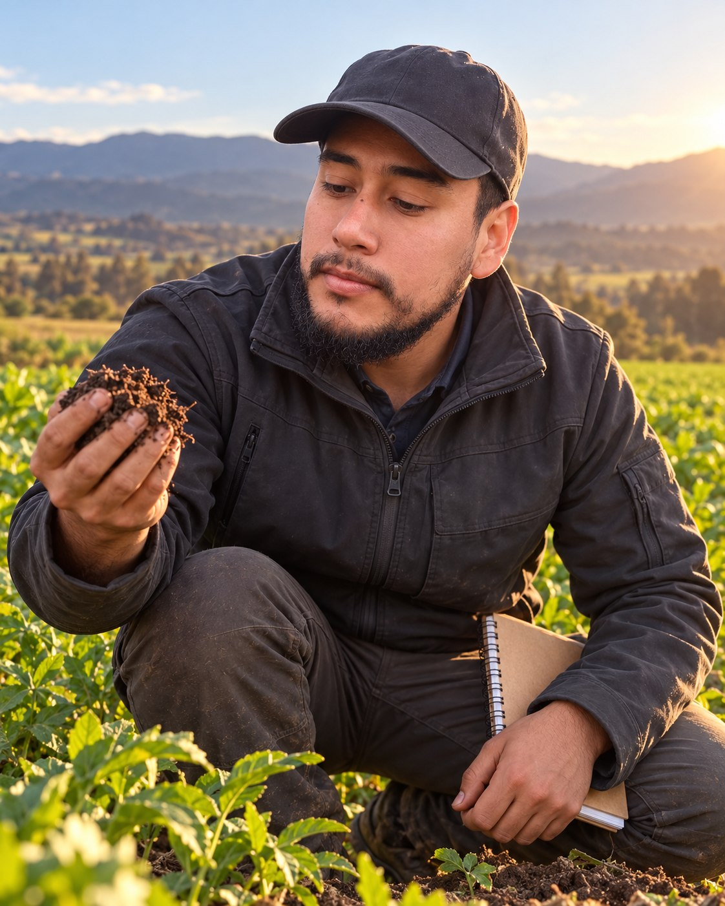

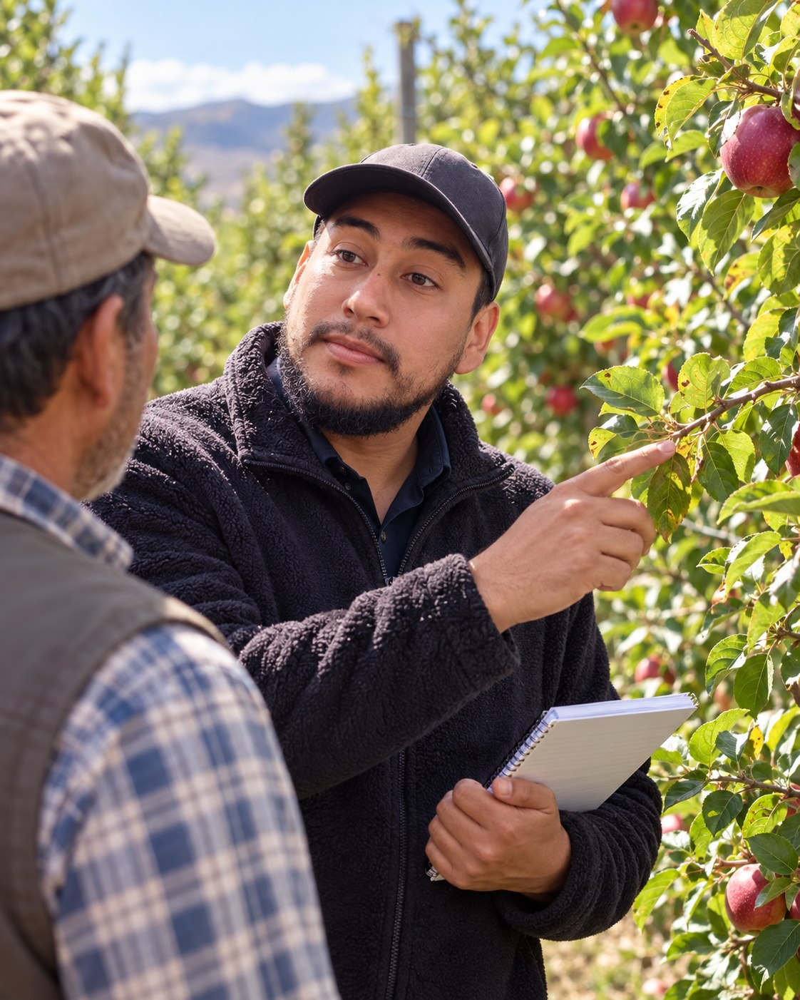
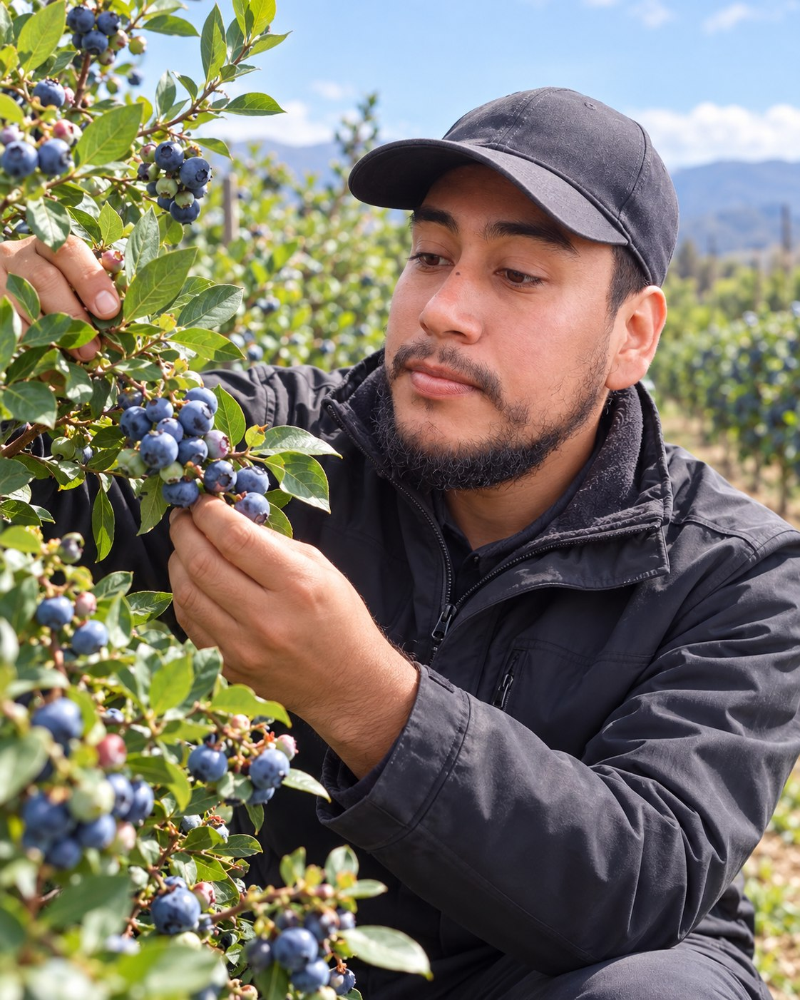
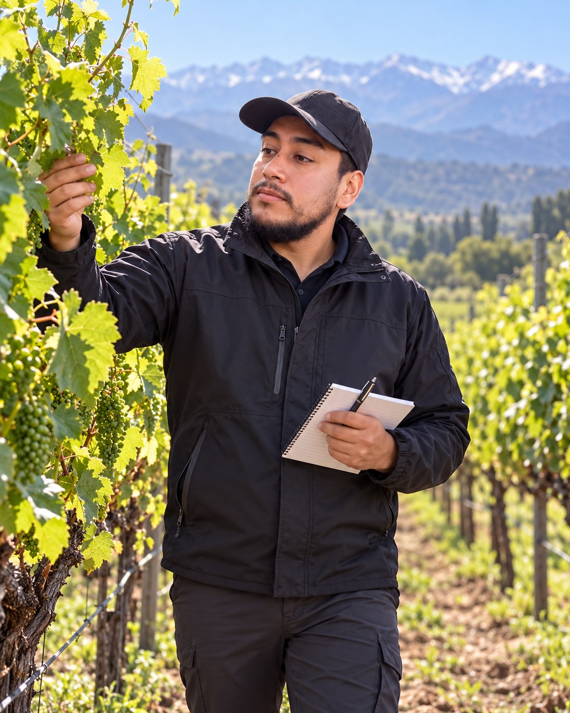
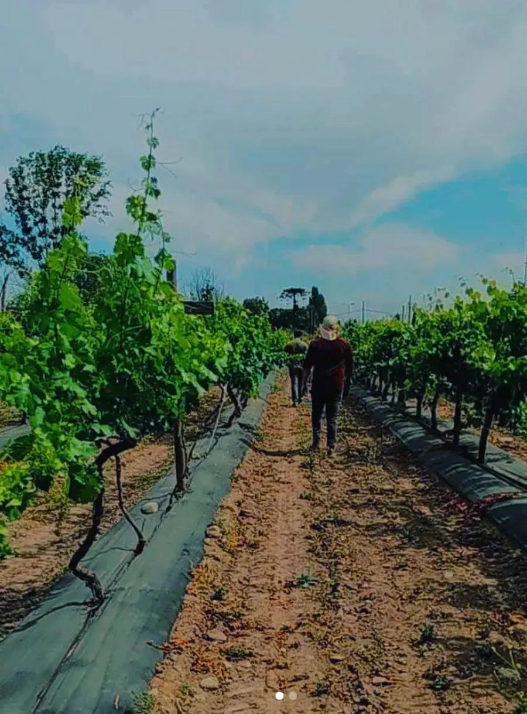
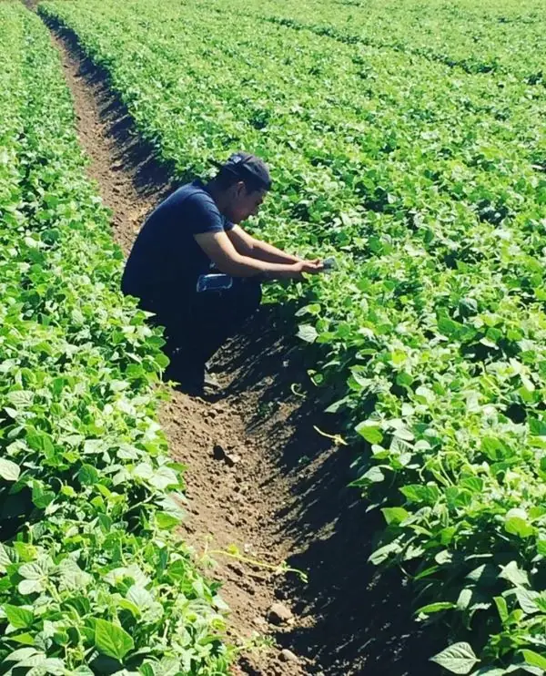
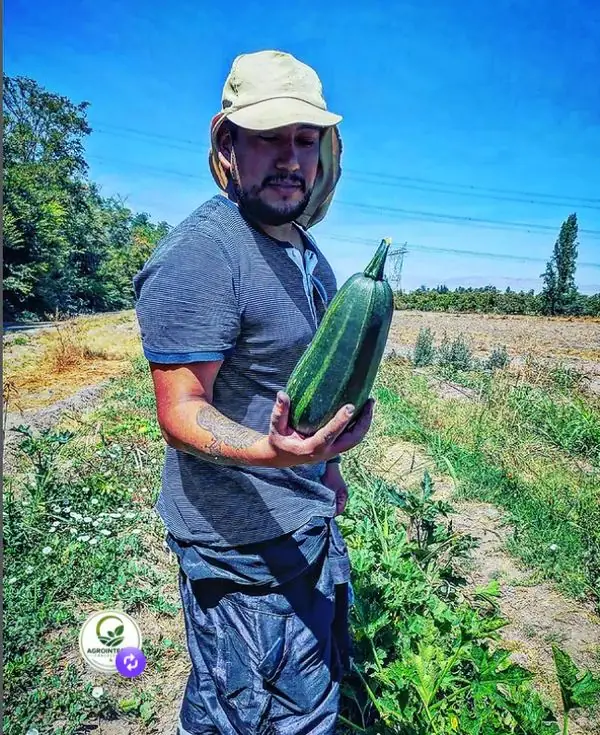
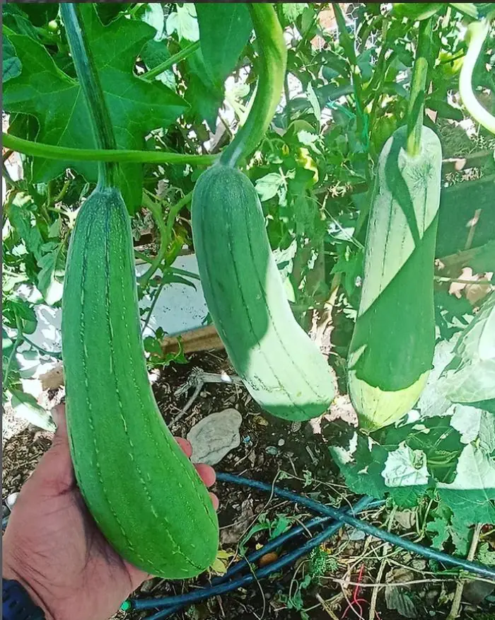
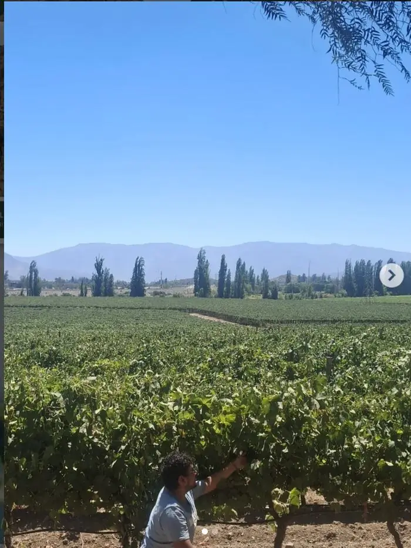
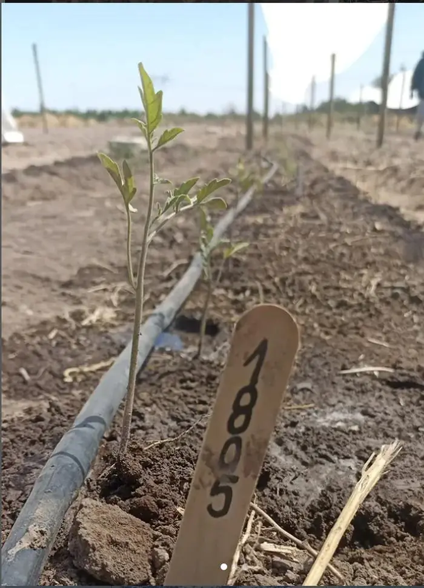
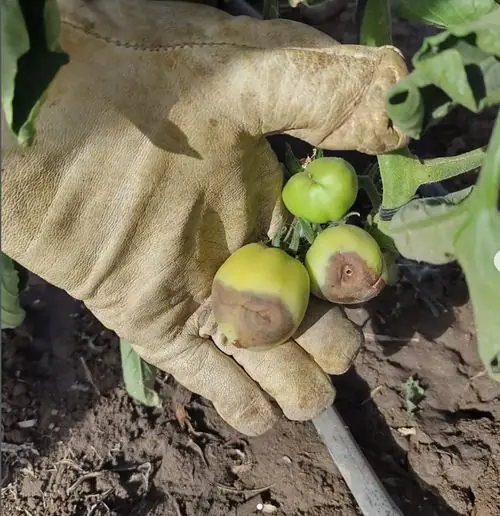
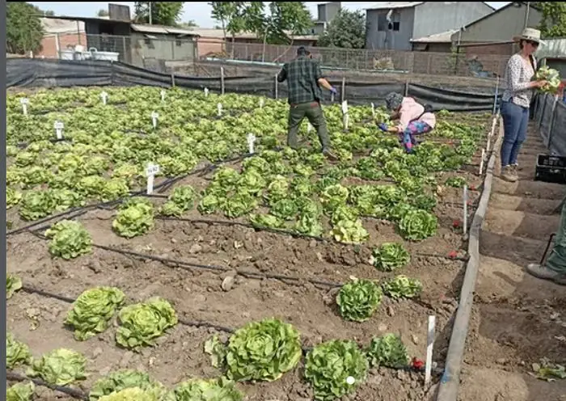
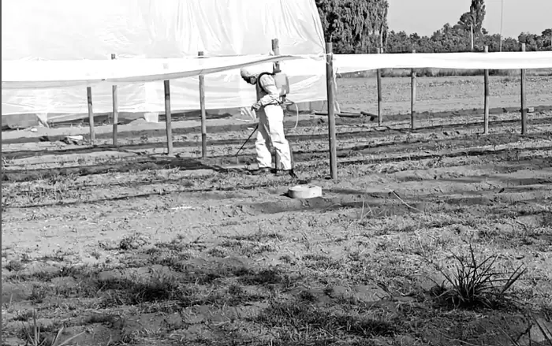
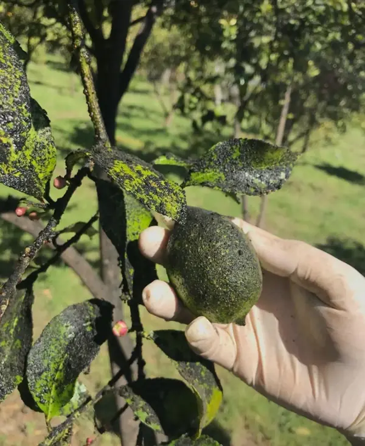
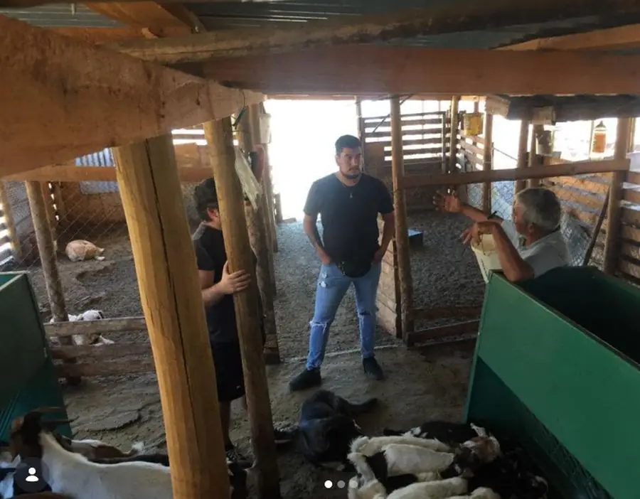
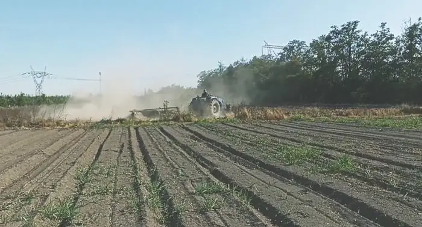
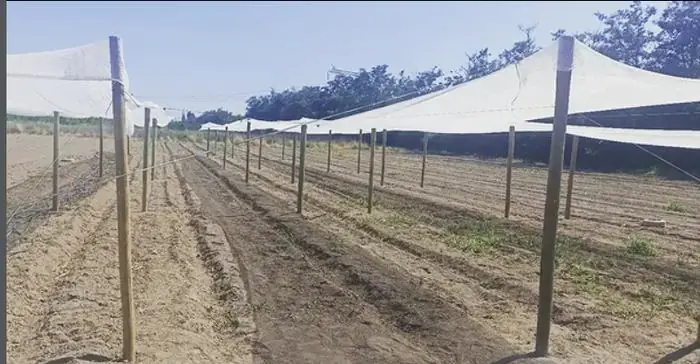
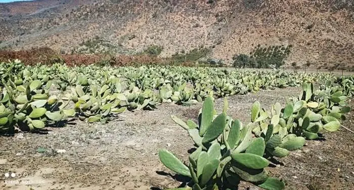